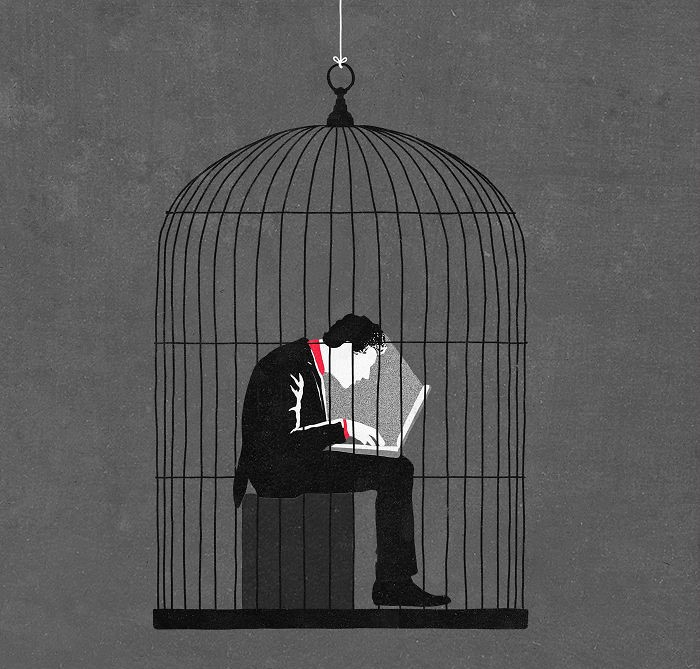
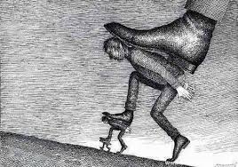
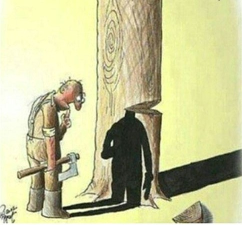

"The eyes, at times, are silent mirrors of the soul’s deepest sorrows—hidden from the world, yet powerful enough to imprison the spirit within. The hand reaching through may embody the silent battle to escape the chains of pain, grief, fear, or even the dreams that once brought hope

Sometimes we humans appear to be free, but in reality, we are trapped by technology, jobs, or modern lifestyles that distance us from the real world, inner peace, and true freedom.

Individuals who experience pressure often impose it upon others. This destructive cycle can only be broken when awareness and justice replace oppression and unfairness.

To cut a tree is not to sever wood, but to silence the breath of life rooted in nature.